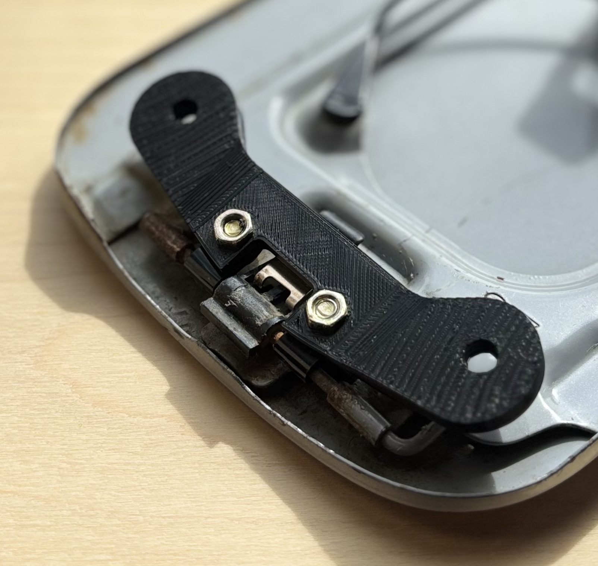
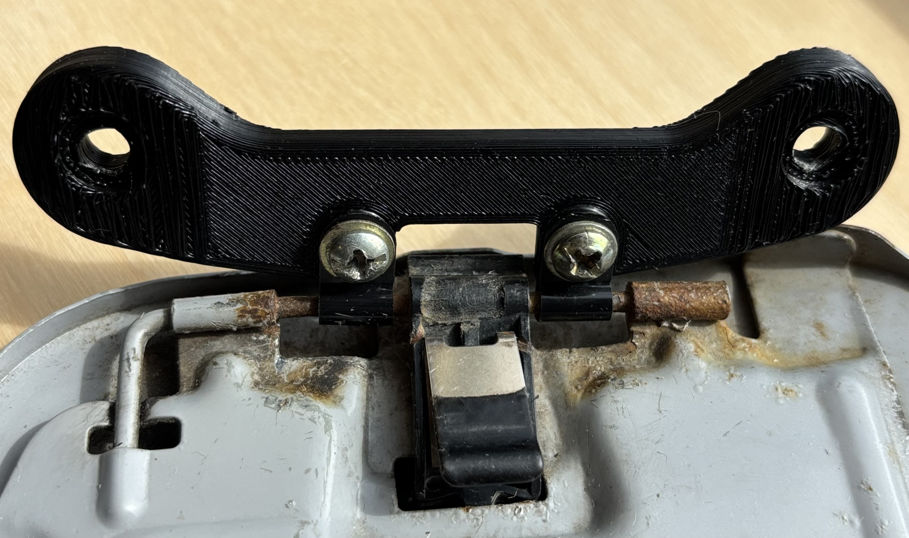

Designed and prototyped a custom 3D-printed fuel door mount to replace a broken factory component. The part was reverse-engineered using a 3D scan and verified with measurements taken using vernier calipers, then modelled in Fusion 360 to accurately match the vehicle’s contours. Multiple iterations were printed and tested to refine fit and durability, with a final design incorporating P-clips as a hinge mechanism after an initial plastic hinge approach proved unreliable. Below you can compare the precise CAD (blue) with the raw scan (orange).

